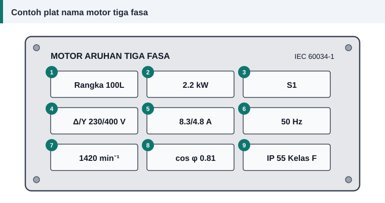

Asas motor
Cara Membaca Plat Nama Motor Elektrik
Sebelum sebatang dawai pun dipotong, baca plat nama. Di situ pengilang mencatat keadaan kerja yang motor itu direka untuknya. Rajah di bawah menunjukkan plat nama contoh dengan sembilan ruangan bernombor, dan jadual seterusnya menerangkan setiap satu.


Maksud setiap ruangan
| No. | Tanda pada plat | Maksud | Kegunaan semasa lilitan semula |
|---|---|---|---|
| 1 | Rangka 100L | Saiz rangka IEC; nombor ialah tinggi pusat aci dalam milimeter | Mengenal pasti saiz teras dan motor ganti |
| 2 | 2.2 kW | Kuasa mekanikal keluaran pada aci | Menyemak arus dan saiz dawai |
| 3 | S1 | Jenis tugas; S1 bermaksud operasi berterusan | Menentukan ketumpatan arus yang selamat |
| 4 | Δ/Y 230/400 V | Voltan kadaran bagi sambungan delta dan bintang | Menentukan voltan fasa belitan |
| 5 | 8.3/4.8 A | Arus talian beban penuh bagi setiap sambungan | Memilih luas keratan dawai |
| 6 | 50 Hz | Frekuensi bekalan | Masuk terus ke dalam formula lilitan |
| 7 | 1420 min⁻¹ | Laju beban penuh dalam pusingan seminit | Menentukan bilangan kutub |
| 8 | cos φ 0.81 | Faktor kuasa pada beban penuh | Mengira kuasa masukan dan kecekapan |
| 9 | IP 55, Kelas F | Tahap perlindungan kepungan dan kelas penebat | Memilih bahan penebat dan varnis |
Voltan berganda: Δ/Y 230/400 V
Tanda ini sering disalah baca. Ia bermaksud setiap fasa belitan direka untuk 230 V. Jika bekalan talian ialah 400 V, sambungkan motor secara bintang supaya setiap fasa menerima 400 ÷ √3 ≈ 231 V. Jika bekalan tiga fasa ialah 230 V, misalnya daripada pemacu frekuensi boleh ubah (VFD) dengan masukan satu fasa, sambungkan secara delta.
Motor bertanda Δ/Y 400/690 V pula mempunyai belitan fasa 400 V. Pada bekalan 400 V ia berjalan dalam delta dan boleh dimulakan dengan pemula bintang-delta. Butiran lanjut ada dalam sambungan bintang dan delta.
Arus: nombor yang menentukan saiz dawai
Dua nilai arus diberi mengikut urutan yang sama dengan voltan. Dalam contoh, 8.3 A untuk delta 230 V dan 4.8 A untuk bintang 400 V. Perhatikan bahawa 8.3 ÷ 4.8 ≈ 1.73, iaitu √3. Arus yang mengalir dalam setiap fasa belitan adalah sama dalam kedua-dua kes, iaitu 4.8 A. Nilai inilah yang digunakan untuk memilih saiz dawai.
Laju dan bilangan kutub
Laju pada plat nama sentiasa sedikit lebih rendah daripada laju segerak kerana gelincir. Laju 1420 pusingan seminit pada 50 Hz paling hampir dengan 1500, maka motor ini mempunyai 4 kutub. Jadual penuh ada dalam laju segerak, kutub dan gelincir.
Menyemak kecekapan daripada plat nama
Kuasa masukan boleh dikira daripada voltan, arus dan faktor kuasa:
Kuasa masukan = √3 × V × I × cos φ = 1.732 × 400 × 4.8 × 0.81 ≈ 2694 W
Kecekapan ialah kuasa keluaran dibahagi kuasa masukan: 2200 ÷ 2694 ≈ 82%. Jika plat nama motor anda memberi keputusan yang tidak munasabah, misalnya melebihi 100%, salah satu angka tersalah baca.
Jika plat nama hilang atau tidak terbaca
- Kira alur dan ukur teras, kemudian anggarkan belitan dengan kalkulator.
- Kenal pasti bilangan kutub daripada rentang gegelung lama: pic kutub hampir sama dengan bilangan alur dibahagi bilangan kutub.
- Cari tanda pada rangka atau penutup hujung. Sesetengah pengilang menuang saiz rangka di situ.
- Catat tinggi pusat aci, diameter aci dan jarak lubang kaki untuk dipadankan dengan jadual saiz rangka IEC.
Rujukan dan bacaan lanjut
Artikel berkaitan
Sambungan Bintang dan Delta: Voltan, Arus dan Kesan pada Belitan
Belitan yang sama boleh bekerja pada dua voltan bergantung pada sambungan bintang atau delta. Fahami hubungan voltan dan arus fasa serta kesannya pada pengiraan lilitan.
Laju Segerak, Bilangan Kutub dan Gelincir Motor
Mengapa motor 4 kutub berpusing hampir 1500 pusingan seminit? Jawapannya terletak pada frekuensi bekalan dan bilangan kutub. Lihat formula, jadual laju dan maksud gelincir.
Memilih Saiz Dawai Belitan: Ketumpatan Arus dan Luas Keratan
Dawai terlalu halus cepat panas, dawai terlalu tebal tidak muat dalam alur. Ketumpatan arus membantu memilih luas keratan kuprum yang seimbang untuk setiap motor.